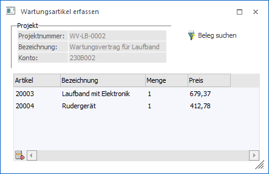
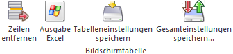
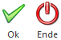

Im Projektstamm, welcher über den Menüpunkt…
1 WinLine FAKT
1 Stammdaten
1 Projektverwaltung
1 Projektstamm
… aufgerufen werden kann, können mittels des Buttons "Artikel einfügen" (Register "Stamm" - Projektart "3 - Serviceprojekt" muss aktiviert sein) Serviceartikel einem Serviceprojekt zugeordnet werden.

Nach dem Drücken des Buttons wird dieses Fenster geöffnet, in dem die Serviceartikel eingetragen oder mittels des Matchcodes gesucht werden können
Achtung
Es werden nur jene Artikel angezeigt, welche im Artikelstamm im Register Lager beim Typ Serviceprojekt "eröffnen" eingestellt haben.)
Ø Projektnummer
An dieser Stelle wird die Projektnummer des aktuellen Serviceprojekts angezeigt.
Ø Bezeichnung
An dieser Stelle wird die Bezeichnung bzw. Beschreibung des Projekts dargestellt.
Ø Beleg suchen
Durch Anwahl dieses Buttons besteht die Möglichkeit alle Artikel aus einem Beleg zu übernehmen. Wurden z.B. mehrere Geräte an einen Kunden geliefert, dann können diese auf einmal in das Serviceprojekt übernommen werden.
Über den Button "Beleg suchen" wird der Beleg Match geöffnet und der entsprechende Beleg kann mit einem Doppelklick ausgewählt werden. Es werden automatisch alle Artikel des Beleges, welche das Kennzeichen "Serviceprojekt" mit "1 - eröffnen" hinterlegt haben, in dieses Fenster übernommen.
Hinweis
Für die Projektauswertung ergibt sich folgender Unterschied:
Wenn bei einem Serviceprojekt Artikel hinzugefügt werden, dann werden diese bei den Istzeiten mit dem Hinweistext "Serviceprojekt-Eröffnung" angezeigt. Werden die Artikel nicht direkt eingetragen, sondern über einen Beleg hinzugefügt, welcher die Projektnummer bereits eingetragen hat, dann werden diese nicht bei den Istwerten als Eröffnungszeilen aufgelistet, da diese dann bereits beim Beleg in der Projektauswertung angeführt werden.
Tabellenbuttons

Ø Zeilen entfernen
Mit Hilfe des Buttons "Zeilen entfernen" können Artikel, welche nicht in das Projekt übernommen werden sollen, wieder entfernt werden.
Ø Ausgabe Excel
Durch Anwahl des Buttons "Ausgabe Excel" wird der Inhalt der Tabelle nach Microsoft Excel übergeben.
Ø Tabelleneinstellungen speichern
Die Spalten einer Tabelle können grundsätzlich an beliebige Positionen verschoben, bzw. in der Breite entsprechend angepasst werden. Durch Anwahl des Buttons "Tabelleneinstellungen speichern" werden die Einstellungen benutzerspezifisch gespeichert und bei dem nächsten Aufruf des Programmpunktes wieder vorgeschlagen.
Ø Gesamteinstellungen speichern
Im Gegensatz zu "Tabelleneinstellungen speichern" können mit "Gesamteinstellungen speichern" mehrere Tabellenaufbauten gespeichert und nach Wunsch geladen werden. Zusätzlich werden Sonderfunktionen der Tabelle (z.B. "Spalte gruppieren") ebenfalls bei der Speicherung bedacht.
Buttons

Ø Ok
Durch Anwahl des Buttons "Ok" bzw. der Taste F5 wird der Inhalt der Tabelle gespeichert und in den Projektstamm zurückgewechselt.
Ø Ende
Durch Anwahl des Buttons "Ende" bzw. der Taste ESC wird das Fenster geschlossen und alle nicht gespeicherten Eingaben verworfen.